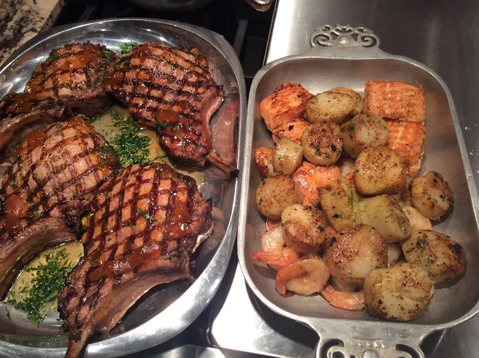
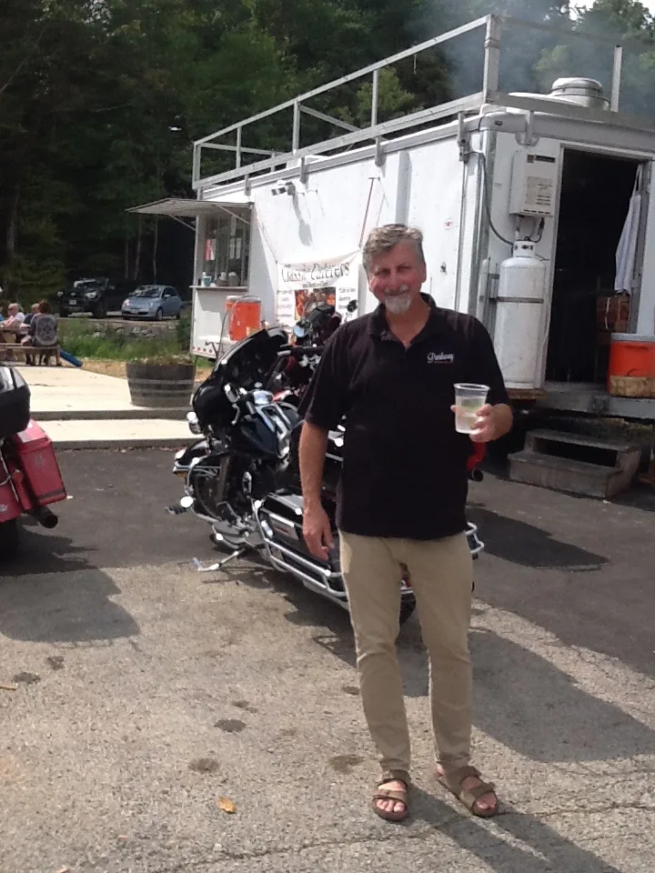
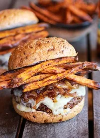

Creative wedding and event planning by Classic Caterers
Your wedding, party or special event deserves individualistic care from a knowledgeable professional caterer who is going to be involved every step of the way. From the initial contact, to the tasting, to the day of the event itself, Richard will personally supervise all of the details.
“Life is too short to throw a bad party.”

Local, sustainable and made from scratch
Richard is committed to using local, sustainable agriculture in his catering and Meals Planning delivery service. He has established relationships with many farms in the area, and works diligently to use fresh, seasonable produce and organic greens, meats and cheeses, often grown just for us — as well as our own farm, where we cultivate a large variety of heirloom herbs, tomatoes, lettuces, wild greens and our Happy Free Range Chickens for egg production on the Blue Ridge Parkway.
For unique banquets, down home BBQs, pig roasts and cookouts, fabulous weddings and parties, let Richard and Classic Caterers’ staff handle all your catering needs. Serving some of the best food in South West Virginia: Roanoke, Blacksburg and Christiansburg, Radford, Pulaski and our home, beautiful Floyd and the Blue Ridge Mountains — but we travel anywhere great catering is required.
What we can do for you
Small or large, we take care of everything from set up to clean up
- Wedding Catering
- Open Houses
- Cocktail Parties
- Lake/Beach Parties
- BBQs and Oyster Roasts
- Lobster and Clam Bakes
- Fish Fries
- Sit Down Service
- Buffets
- Theme Parties
- Corporate Events
- Church Socials
- Disaster Recovery/Response
- Special Services/Entertainment
- Fund Raising
Browse the menus, then make them yours
All of our menus are designed specifically for you, created to complement the occasion and the theme of the event. From a wedding at the beach to a family BBQ to a black tie corporate function, we will help bring uniqueness and originality.

A food truck that belongs at a formal event
While the phrase “food truck” usually calls to mind messy street food and questionable ingredients, Longfin Grill and Classic Caterers have been on the forefront of the new breed of food trucks for over 15 years — serving up high-end dishes with fresh, seasonal and locally sourced ingredients that fit perfectly at a formal event.
With a 30 foot, commercial kitchen trailer (a nicer kitchen than many restaurants), Longfin Grill is perfect for any event.
Food truck weddings“Friends don’t let friends throw bad parties”
Thank you for your referrals and all the good words.
Thank you so very much! It wouldn’t have been quite as wonderful had you not been there to help execute a delicious dinner and exceptional service! We appreciate all your quick responses to our questions and working so easily with our wedding coordinator. We owe you a million thanks! We absolutely loved our wedding day :)
Fantastic! Amazing! Wow! I found Richard on the internet and had been working with him for our wedding, and then our wedding had to be postponed. My fiancé then surprised me with a catered birthday dinner by Richard and I couldn’t have been more happy with the result. His professionalism, unique recipes and presentation were stunning! So, I was able to experience the best pre-wedding tasting! I cannot wait to see and taste all the wonderful menu items for our rehearsal dinner and wedding to come! Thank you Richard!
Richard Perry is an exceptional individual and chef. I hosted an event with 50 Presidents and CEOs of the top technology companies in the region. The food was FANTASTIC, the service exemplary and Richard was the belle of the ball. I highly recommend Richard and Classic Catering for your next event, large or small!
Planning a wedding, party or BBQ?
Pick your occasion, guest count and menu style, and we’ll start your inquiry for you.